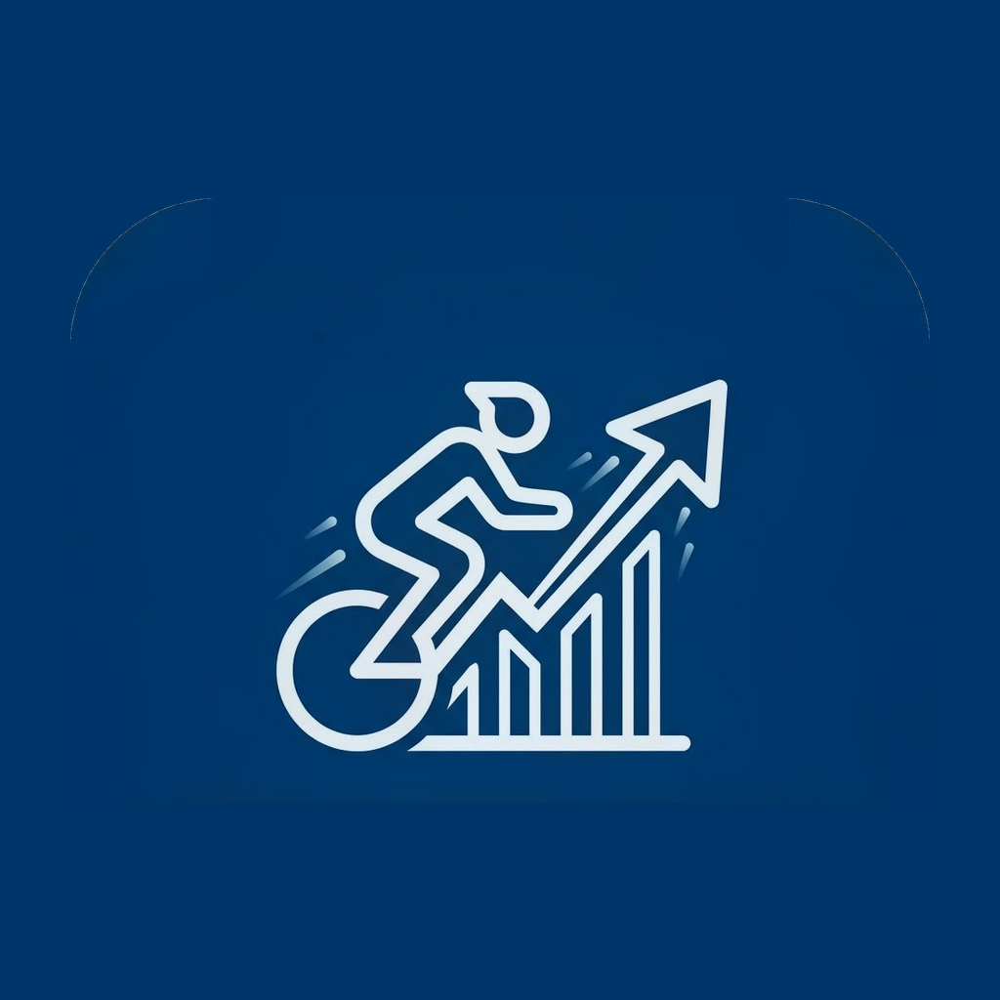
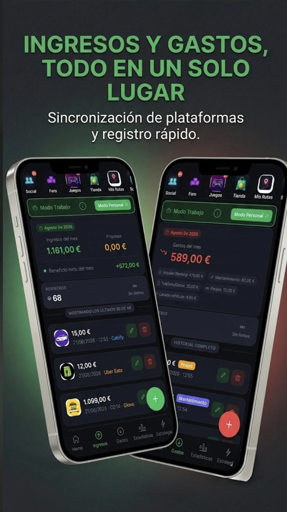
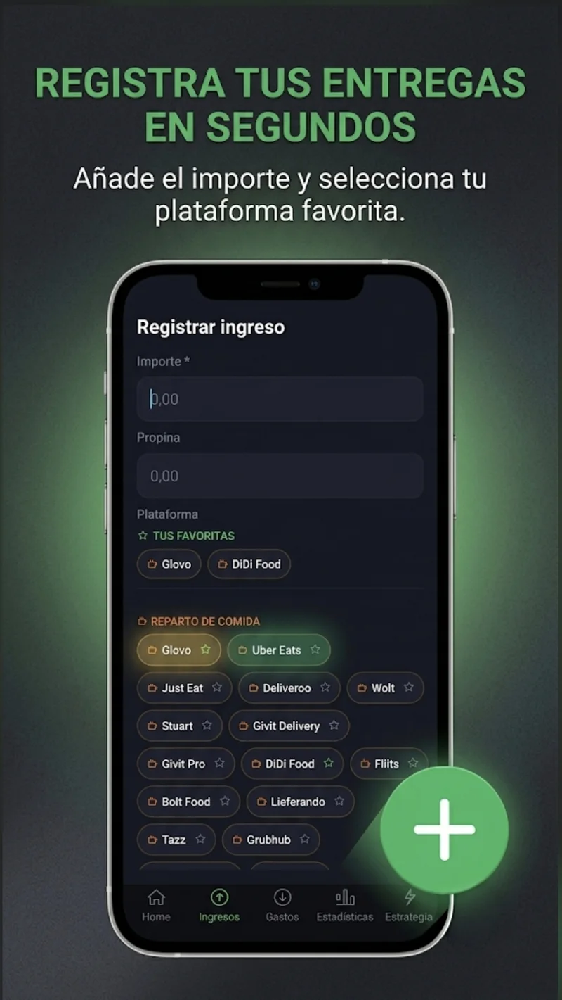
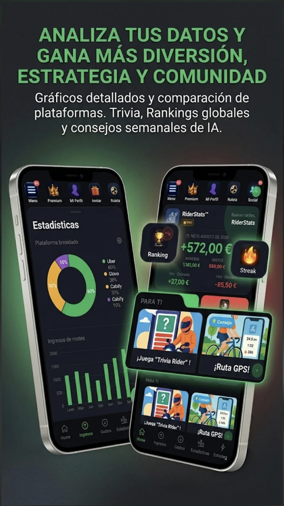
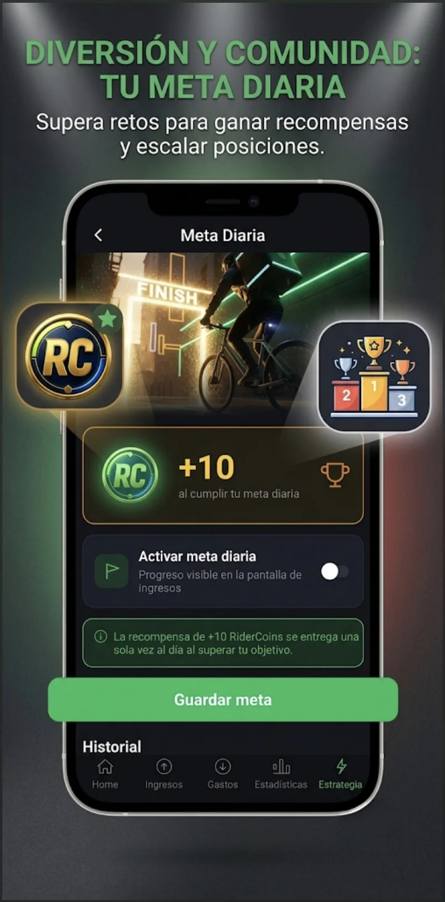
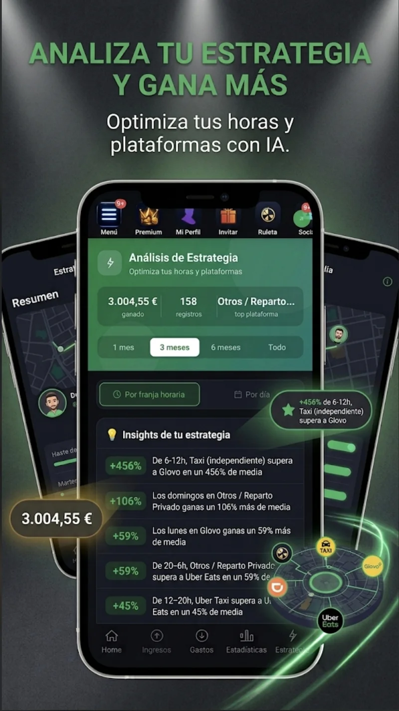
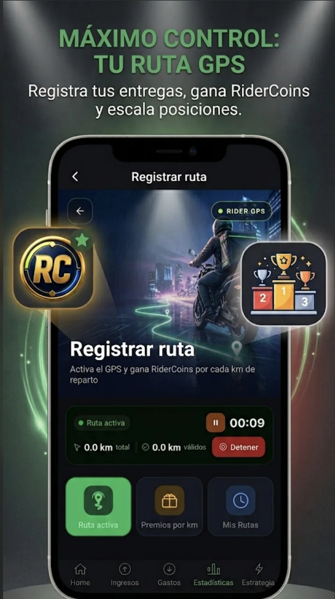

Ingresos y gastos
Registra pagos, propinas y gastos; consulta el resultado neto con tus movimientos en contexto.

RiderStatsPara cualquier persona que quiera ordenar sus finanzas personales, su trabajo o su negocio. Especialmente útil en reparto y transporte —riders, VTC y taxi—: registra salario fijo por contrato o ingresos por pedido y entrega, además de gastos y jornadas.
Elige Modo Trabajo o Modo Personal: registra salarios, pedidos, servicios y gastos; cada modo mantiene sus cuentas separadas.
Registra turnos, pausas y notas. Consulta horas y ganancias por hora; con salario fijo y horas pactadas, compara con el contrato.
Registra pagos, propinas y gastos; consulta el resultado neto con tus movimientos en contexto.
Separa ingresos y gastos personales de los laborales. Solo Modo Trabajo cuenta en tu neto laboral y en los informes fiscales.
Genera informes en PDF o Excel/CSV y compártelos. Gratis: una exportación al día viendo un vídeo; Premium: sin límite.
Consulta gráficos avanzados e ingresos por plataforma; compara horarios, días y estrategia. Las zonas usan ingresos y gastos confirmados.
Define una meta y sigue tu avance. Premium añade análisis de IA y consejos semanales personalizados.
Reta a tus amigos en Trivia Rider, Connect4 y futuros juegos: partidas para compartir en los ratos de espera entre repartos.
El asistente de IA responde al instante, 24/7. También puedes abrir un ticket para pedir ayuda al equipo.
Registra rutas o servicios y consulta gratis el rendimiento de los últimos 7 días. En Mis Rutas verás una vista previa difuminada; Premium desbloquea los mapas completos, el análisis histórico y las comparativas de zonas.
Gana RiderCoins al registrar ingresos y gastos, cumplir metas y rachas, recorrer rutas GPS y jugar. También puedes obtenerlas con retos e invitaciones. Úsalas en la tienda, la ruleta y Slot Machine para conseguir temas, títulos y premios.
Moneda virtual de RiderStats; no es dinero en efectivo ni se puede retirar.
Desliza para recorrer las pantallas. Cada galería muestra capturas de su idioma.






Registra tus recorridos y servicios con GPS, revisa tus rutas guardadas y consulta en el mapa los ingresos y gastos vinculados. Desde cada punto puedes abrir tu app de mapas favorita.